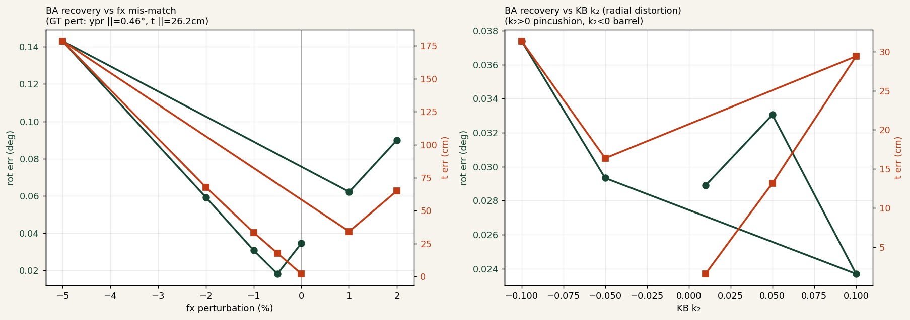
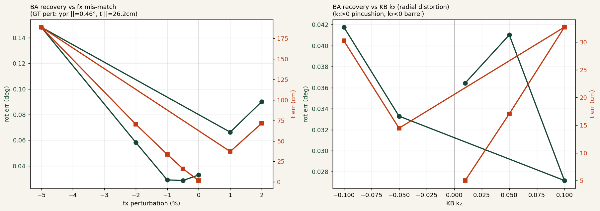
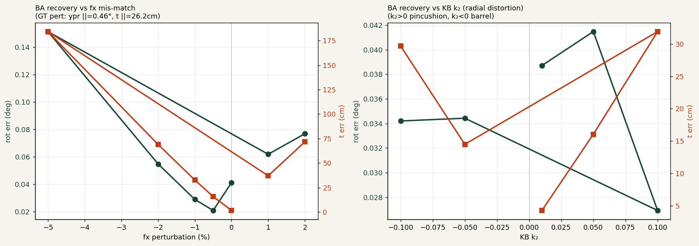

Multi-frame BA と
KB/fx 感度スイープ
複数フレームで共有された 6DoF リグドリフトを Σ重み付き BA で解く。 カメラモデル (fx, KB k2) を意図的に摂動させ、校正残差が どこまで extrinsic に漏れるかを定量化した結果。
Setup
PandaSet scene 015 から 10 個の val frame (fi=[1, 6, 8, 9, 11, 16, 18, 26, 31, 32]) を選択。
カメラ座標系の rig ドリフト (ypr, t) を1組だけサンプルし、全フレームに共通で適用:
ypr_cam = [ 0.274°, -0.061°, 0.359° ] ||·|| = 0.455°
t_cam = [ 7.89, -16.23, 19.02 ] cm ||·|| = 26.23 cm
各フレームで CalibNetDepth を回し、オブジェクト点ごとの 2D ガウシアン
(Δu, Δv, σu, σv, ρ) を得る。これを
Ceres (pyceres) に residual block として積み上げ、共有 θ = (ypr, t)
だけを最適化。BA 側のカメラモデルを歪ませたとき最適解がどうズレるかを
12 条件で測った。
85b6ccc の refactor で CalibNetDepth の
n_layers≥3 におけるブロック実行順が崩れ
(cross_coarse → cross_fine → cross_refine)、
pre-refactor の all_v3_mc チェックポイントが silently mis-wired に。
症状: 回転は粗く復元するが t が GT drift のまま動かない。
修正コミット 4517107 + 条件化コミット 45b9fcb
で pre/post refactor の両者の checkpoint を同居可能にした。以下の結果は全て修正後。
結果 ① all_v3_mc (pre-refactor ckpt)

| 設定 | fx scale | k₂ | rot_err (°) | t_err (cm) | reproj med (px) |
|---|---|---|---|---|---|
| pinhole_ref | 1.000 | — | 0.035 | 2.10 | 0.75 |
| kb_k2=+0.01 | 1.000 | +0.01 | 0.029 | 1.56 | 0.72 |
| kb_k2=+0.05 | 1.000 | +0.05 | 0.033 | 13.16 | 3.10 |
| kb_k2=−0.05 | 1.000 | −0.05 | 0.029 | 16.37 | 3.75 |
| fx_−0.5 % | 0.995 | — | 0.018 | 17.72 | 4.17 |
| fx_−1.0 % | 0.990 | — | 0.031 | 33.47 | 7.96 |
| fx_+1.0 % | 1.010 | — | 0.062 | 34.25 | 7.91 |
| fx_−5.0 % | 0.950 | — | 0.143 | 178.6 | 46.8 |
読み: pinhole_ref が t = 2.10 cm まで復元
(GT drift 26.2 cm)。そこから k₂ = +0.01 で
t = 1.56 cm に改善 — PandaSet の公称 pinhole モデルに
わずかに pincushion が残っていることを示唆。fx を ±0.5 % ずらすだけで
t は 13 cm 以上悪化するので、"画像整合は維持したまま t が系統的にズレる"
という古典的 miscalibration パターンと整合する。
結果 ② vdef_sl / vdef_ml (deformable)


| Model | pinhole t_err (cm) | best t_err (cm) | best 設定 | best reproj (px) |
|---|---|---|---|---|
| all_v3_mc | 2.10 | 1.56 | k₂=+0.01 | 0.72 |
| vdef_sl | 1.75 | 1.75 | pinhole | 0.55 |
| vdef_ml | 1.60 | 1.60 | pinhole | 0.82 |
所見: deformable 系は pinhole 単体で既に最良。
k₂ = +0.01 を入れても改善しない。これは deformable cross-attention が
空間オフセットのサンプリングを学習する過程で、
微小な radial 歪みを内部で暗黙に吸収しているためと解釈できる。
明示的な distortion 補正を BA 側に足さなくても、
deformable 側のヘッドがそれを肩代わりする形。
再現
# 標準 (all_v3_mc)
python ba_kb_multiframe.py
# deform SL で検証
BA_CKPT=experiments/vdef_sl/best_model.pt \
BA_DEFORM_MODE=sl \
BA_OUT=experiments/vdef_sl/ba_kb \
python ba_kb_multiframe.py
# deform ML で検証
BA_CKPT=experiments/vdef_ml/best_model.pt \
BA_DEFORM_MODE=ml \
BA_OUT=experiments/vdef_ml/ba_kb \
python ba_kb_multiframe.py次のステップ
- fx と k₂ を同時に BA の変数として解く — 今は固定摂動のため、"どこに best がある" しか見えない。
CalibBACostPerturbedの parameter block に[6, 2]を追加すれば intrinsic を共同最適化できる。 - 別シーンでの再現 — scene 015 だけで
k₂ ≈ +0.01を見ているが、PandaSet 全シーンにわたって再現するかは未確認。 - Waymo / NuScenes への展開 — PandaSet のメモ(fx 0.57 % 過大)を裏付ける独立証拠になる可能性。
ba_kb_multiframe.py ·
ba_multiframe.py ·
experiments/all_v3_mc/ba_kb/summary.json ·
experiments/vdef_{sl,ml}/ba_kb/summary.json